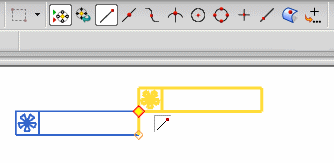

Estimated time to complete this lesson: 9–13 minutes
You can associatively link and position objects to points in a custom symbol instance without having to first smash or break apart the symbol. Snap Point options on the Selection bar are available to help you select the points you need. For example, you can:
Attach leaders to points within custom symbol instances.
Dimension to points in custom symbol instances.
Align notes and other annotation to points within custom symbol instances.
Associatively tie custom symbol instances to other custom symbol instances.

If a custom symbol instance is updated or linked to a different master custom symbol, associated annotation will be placed in a retained state.
|
Note |
You cannot associatively attach sketch objects to points in custom symbol instances. Also, you cannot associatively attach drafting objects to PMI custom symbols inherited on drawings. |
This functionality is available in the Drafting application for any command that uses options from the Origin and Leader groups of the dialog box to place an object